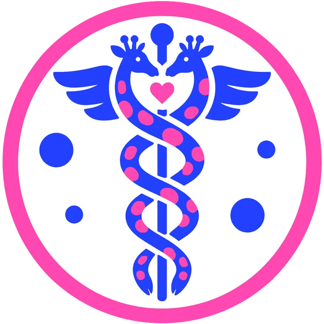
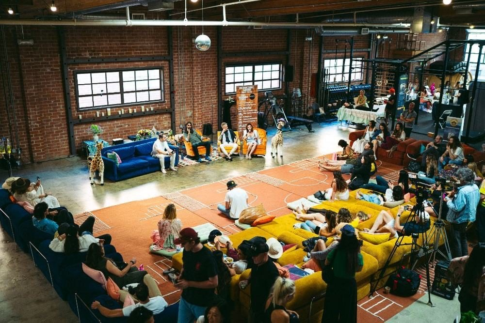
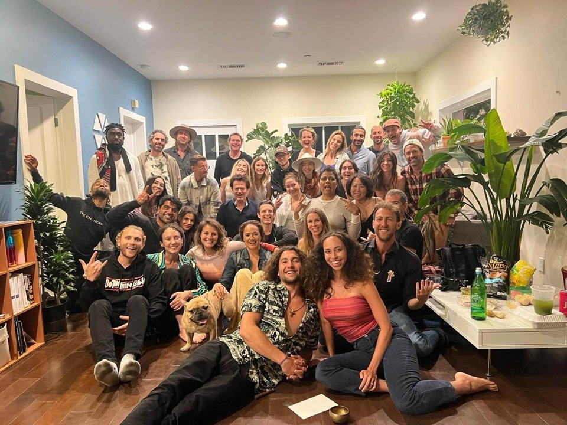
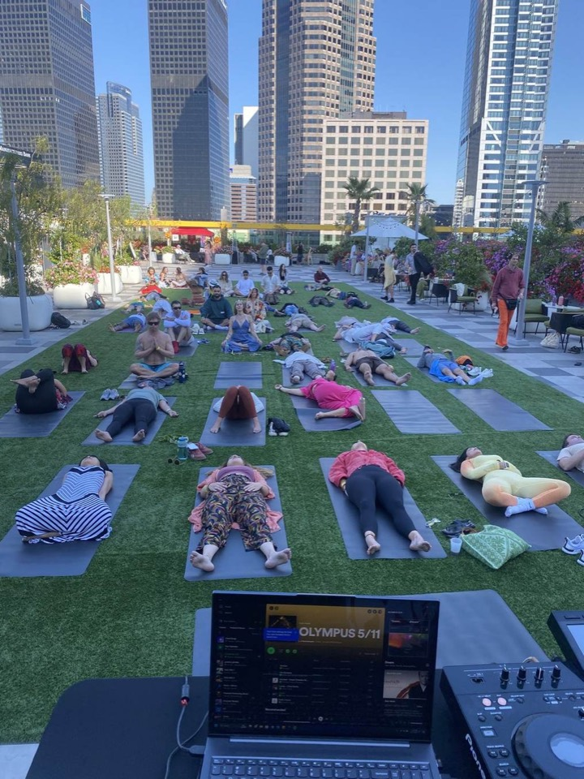
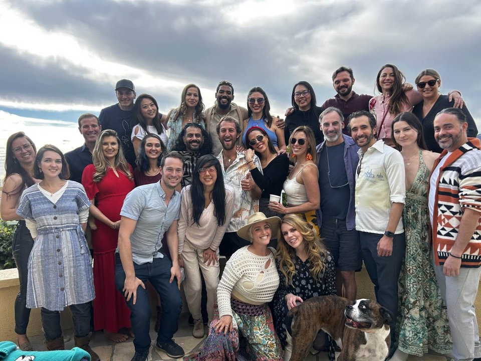
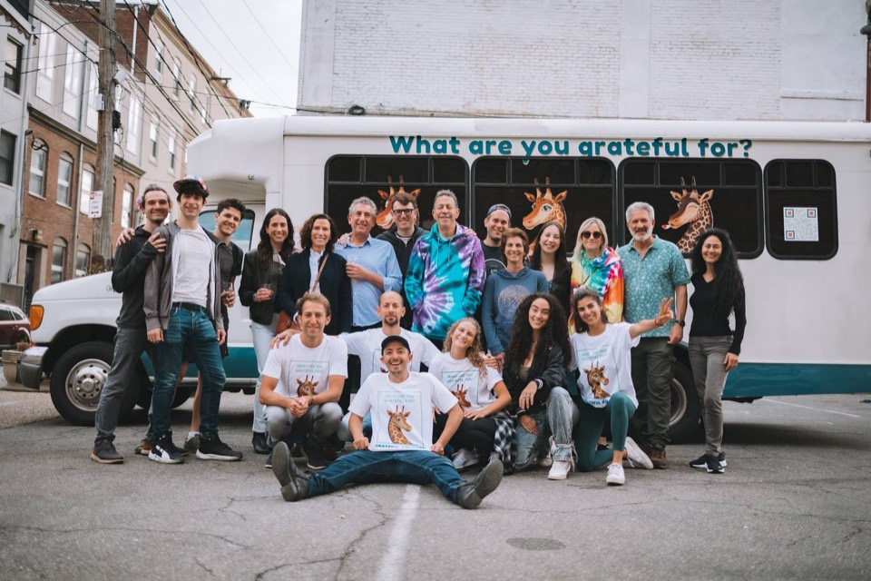

grateful health
Regenerative medicine, in community.
In partnership with the Grateful Giraffes
The power of a community doing its diligence together, toward longer, healthier lives. We are starting with peptides.

Powered by Grateful Labs & Platform Health All twelve ↓Regenerative medicine, in community.
In partnership with the Grateful Giraffes
The power of a community doing its diligence together, toward longer, healthier lives. We are starting with peptides.
Learn
Peptides are short chains of amino acids. Each card plays a short animation of what it does in the body. Some of these are not peptides, and the card says so. Tap the tabs for benefits, risks, dosing and stacking.
A licensed physician decides what fits you, and some peptides cannot be prescribed at all. Nothing here is medical advice.
Ordering
Prescription peptides are not an add to cart product. You ask, a physician decides, a pharmacy fills it.
Nothing is prescribed in a cart: you choose what you want a physician to consider.
At checkout, so the physician has what they need.
An independent medical group makes every prescribing decision. If they say no, you are not charged for the medication.
Discreetly, to your door, in the states where a provider can care for you.
The peptide shop
The Grateful Health peptide shop is built by Grateful Labs and Platform Health together. Each side does one job.
Explains each peptide in plain words, like this page, and points you to the right place in the shop.
Runs the shop and the checkout.
Do the medicine: independent physicians make every prescribing decision, and licensed US pharmacies fill and send it.
Each name opens its own page in the shop.
Who we are
In the Blue Zones, the places where people live the longest, one thing keeps showing up: people belong to a community that looks out for each other.





The Grateful Giraffes are that kind of community. Grateful Health puts it to work: a thousand of us asking the hard questions, trying things, comparing notes and vouching for what we would recommend.
The power of a community doing its diligence together can lead to longer, healthier lives.
Grateful Labs is the venture studio behind Grateful Health, and every Giraffe is a shareholder.